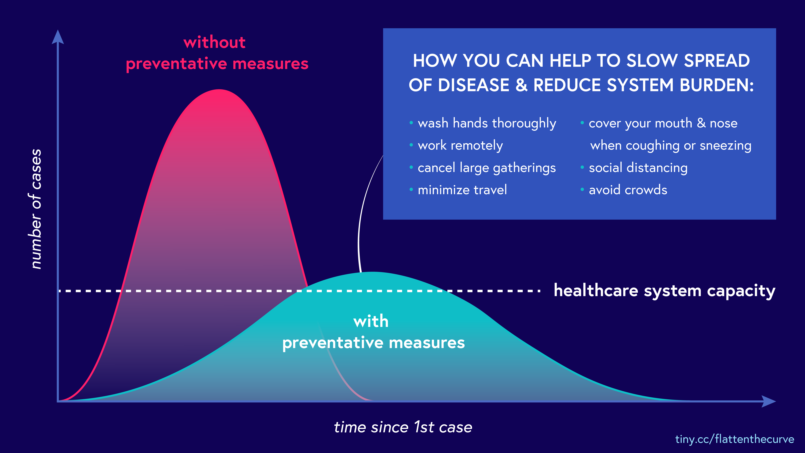

The news about COVID19 is overwhelming. Cases are skyrocketing, and measures to prevent further spread may seem extreme. In attempt to make sense of it all, this article will illustrate the dynamics behind limiting COVID19's spread and reducing its severity.
Keep scrolling. Using simulations, you'll gain intuition about what it means to 'flatten the curve' and why its important.
Spread: The problem with 'going viral'
Unchecked, contagious diseases can spread relatively rapidly. Let’s say you meet up with two friends in the park. If one is infected but doesn’t know it, that weekend outing can result in the virus spreading:
To illustrate what it means for a disease to go viral, this simulation assumes the following:
People interact once per day with others in their network.
Each person linked to an infected person has a 2% chance of becoming infected per interaction.
Each infected person stays infected and contagious for 22 days.
After that, they recover and cannot be infected again.
A note about these simulations
These, and the other assumptions on this webpage are intended to let you understand what’s going on, rather than to model the present situation.
Scientists' understanding of the disease (and the things we can do to combat it) changes quickly, and the inputs to any model should vary based on the population being modeled (e.g. differences in demographics and risk factors like hypertension and coronary artery disease).
Epidemiologists have far more complex and elegant methods for doing this, so while this can give you intuition, you should listen to them for a more nuanced view.
Sim 1. Your Local Network
Going viral means exponential growth. Exponential growth means that an illness in a tiny percentage of the population can become widespread very quickly.
Severity: why hospital beds matter
COVID19 can be fatal. As a novel illness, there isn't (yet) a cure or a proven way to reduce the severity of the disease.
In other words, "treating COVID19" means letting the disease run its course. Doctors can only manage symptoms, which in severe cases require hospitalization to keep a patient alive.
Unfortunately, hospitals have a limited number of beds and cannot accomodate surge of patients. To see what it takes to run out of hospital beds, we'll layer on the fact that people might
require hospitalization
get hospitalized
die from COVID19
More about the assumptions
These are simplifing assumptions that don't represent the actual situation.
A healthy individual has a 10% chance of a severe case of COVID-19.
If they have access to a hospital bed, they have a 98% of surviving.
Without one, they have a 95% chance.
An immunocompromised individual has a 100% chance of a severe case of COVID-19.
If they have access to a hospital bed, they have a 80% of surviving.
If not,they have a 20% chance.
Further, assume that:
Approximately 3% of this population is immunocompromised
There is 1 hospital bed per 360 people.
Being immunocompromised (or older) are not the only risk factors associated with catching or having severe cases of COVID19. There's evidence that those with hypertension & coronary artery are at higher risk of contracting and of dying from COVID19, and comorbidities like diabetes and respiratory disease are associated with having a severe case and dying from it.
Sim 2. Uncontrolled Spread
At the peak, there were over 15 people waiting for each hospital bed.
This is why you'll hear makeshift hospitals springing up in convention centers, museums, parks, and stadiums. Healthcare capacity is limited, and expanding it is critical to helping patients survive.
A note about healthcare capacity
Beyond hospital beds, a similar situation exists for ventilators, which are used when patients can no longer breath on their own. The limited supply is expected to be overwhelmed by spikes in demand.
There is also a finite number of healtcare providers, and the number can actually decrease as they fall ill (or die) from COVID19. This makes the shortage of masks, gloves, and other protective equipment both problematic and heartbreaking. The situation is so dire that the US government is now requiring companies like GM to manufacture personal protective equipment (PPE).
Running out of toilet paper doesn’t seem so dire anymore, does it?
Buying time
The healthcare system needs time to respond to COVID19, either via short-term increases in hospital beds, a treatment, or a vaccine.
Buying time for these things to happen means moderating the demand for hospital beds, which translates to decreasing the spikes of people who need to be hospitalized.
This notion is what's behind pleas to 'flatten the curve' in graphics like this:

One immediate, albeit blunt, instrument for flattening the curve is a policy of social distancing. Fewer social interactions means the virus can't jump from person-to-person (or person-to-surface-to-person).
In the simulation below, toggle the different types of connections to see how different interventions slow the spread of this disease.
Sim 3. Enabling Social Distancing
Put another way, in the chart below, you can see how changing the start date of the social-distancing policy impacts the spread of the disease.
The sooner you start policies like social distancing, the more time the healthcare system has to react and the lower the peak load will be.
A note about the chart
This chart is based on an SIR model, which is one of the most simple models used by epidemiologists to think about the spread of infectious disease.
When can we stop?
The simulation above assumes no end date for a social distancing policy.
However, social distancing extract a heavy toll on our communities, businesses, and the economy. While governments are taking measures to offset the effects of this, it’s natural to wonder how long they must go one.
Below you can see how a finite social-distancing policy affects the spread of this disease:
Sim 4. Time-bound Enforcement
In the chart below, you can see that the number of cases increase by intervening too late or by stopping too early. You can also have multiple periods of social distancing.
The question of when to stop is a difficult one, even moreso because so much is unknown. As you can see from the chart above, in the absence of policies or technologies that can prevent spreading, the number of infections will grow again.
When might COVID19 stop being an issue?
There are a lot of unknowns on how long this will go on; however, to save lives, communities will have to practise some form of managing the spread (like social distancing) until:
We know a significant portion (60% - 80%) of the population has developed immunity, either by having been sick and recovered or by getting vaccinated,
We can identify and quarantine those who are contagious through testing and contact tracing, or
The disease can become more managable due to things like an expanded ability to treat (hospital beds, ventilators, Rx) or a cure.
You can help!
This situation is tough, but the good news is you can help:
Stay home. Revel in the fact that you are doing a good thing for society by sitting on your couch binge watching Netflix.
Convince your parents to stay home. It's not just about age. Comorbidities matter too. Evidence suggets that those with hypertension and coronary artery disease have higher risk of contracting COVID19.
If you must go out, stay away from others... like, one mattress-length away from others.
One mattress???
Mattresses in the US are ~6 feet long, which is how the CDC defines 'close contact.'
To recap
We can manage outbreaks of infectious diseases like COVID19 by limiting spread and/or reducing severity.
Exponential growth means that an illness in a tiny percentage of the population can become widespread very quickly.
Healthcare capacity is limited, and expanding it is critical to helping patients survive.
Starting policies like social distancing sooner buys time for healthcare system has to react and lowers the peak load. Stopping anti-spreading policies can result in a flare up of infections.
Stay home!!!
Thanks for reading! Our intent is to increase understanding, rather than to spread misinformation. If you see any errors, please reach out and let us know.